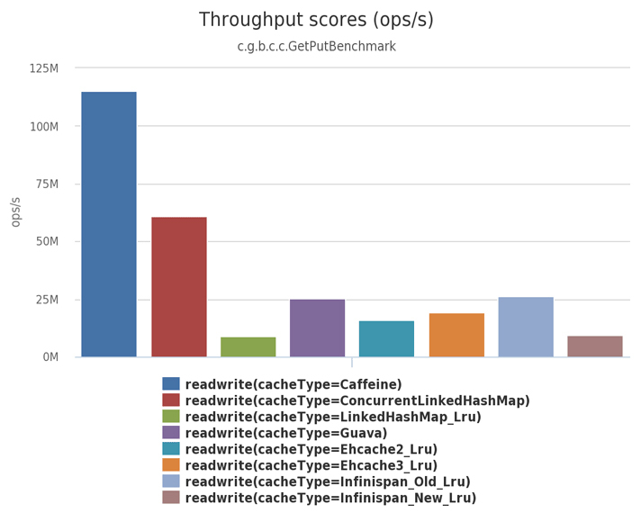
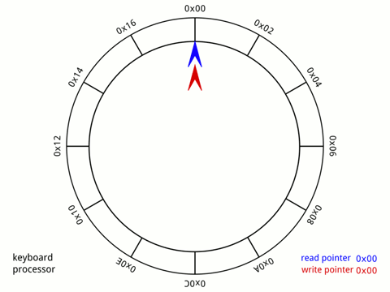
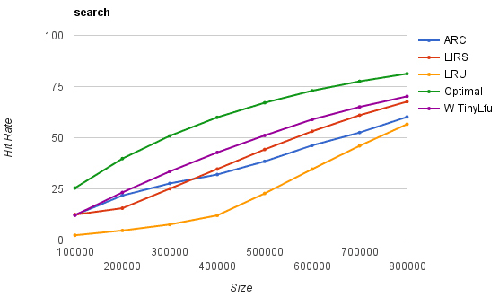
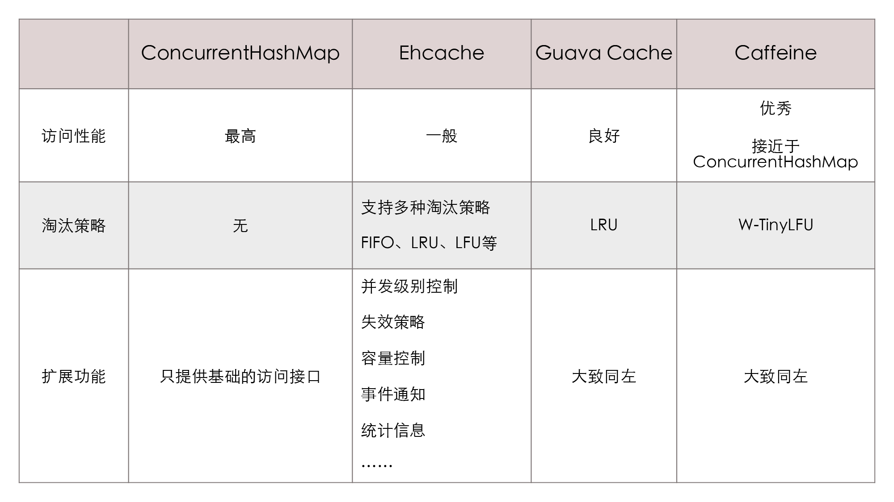

- 00 _导读 _ 什么是“The Fenix Project”？.md.html
- 00 开篇词 _ 如何构建一个可靠的分布式系统？.md.html
- 01 _ 原始分布式时代：Unix设计哲学下的服务探索.md.html
- 02 _ 单体系统时代：应用最广泛的架构风格.md.html
- 03 _ SOA时代：成功理论与失败实践.md.html
- 04 _ 微服务时代：SOA的革命者.md.html
- 05 _ 后微服务时代：跨越软件与硬件之间的界限.md.html
- 06 _ 无服务时代：“不分布式”云端系统的起点.md.html
- 07 _ 远程服务调用（上）：从本地方法到远程方法的桥梁.md.html
- 08 _ 远程服务调用（下）：如何选择适合自己的RPC框架？.md.html
- 09 _ RESTful服务（上）：从面向过程编程到面向资源编程.md.html
- 10 _ RESTful服务（下）：如何评价服务是否RESTful？.md.html
- 11 _ 本地事务如何实现原子性和持久性？.md.html
- 12 _ 本地事务如何实现隔离性？.md.html
- 13 _ 全局事务和共享事务是如何实现的？.md.html
- 14 _ 分布式事务之可靠消息队列.md.html
- 15 _ 分布式事务之TCC与SAGA.md.html
- 16 _ 域名解析系统，优化HTTP性能的第一步.md.html
- 17 _ 客户端缓存是如何帮助服务器分担流量的？.md.html
- 18 _ 传输链路，优化HTTP传输速度的小技巧.md.html
- 19 _ 如何利用内容分发网络来提高网络性能？.md.html
- 20 _ 常见的四层负载均衡的工作模式是怎样的？.md.html
- 21 _ 服务端缓存的三种属性.md.html
- 22 _ 分布式缓存如何与本地缓存配合，提高系统性能？.md.html
- 23 _ 认证：系统如何正确分辨操作用户的真实身份？.md.html
- 24 _ 授权（上）：系统如何确保授权的过程可靠？.md.html
- 25 _ 授权（下）：系统如何确保授权的结果可控？.md.html
- 26 _ 凭证：系统如何保证与用户之间的承诺是准确完整且不可抵赖的？.md.html
- 27 _ 保密：系统如何保证敏感数据无法被内外部人员窃取滥用？.md.html
- 28 _ 传输（上）：传输安全的基础，摘要、加密与签名.md.html
- 29 _ 传输（下）：数字证书与传输安全层.md.html
- 30 _ 验证：系统如何确保提交给服务的数据是安全的？.md.html
- 31 _ 分布式共识（上）：想用好分布式框架，先学会Paxos算法吧.md.html
- 32 _ 分布式共识（下）：Multi Paxos、Raft与Gossip，分布式领域的基石.md.html
- 33 _ 服务发现如何做到持续维护服务地址在动态运维中的时效性？.md.html
- 34 _ 路由凭什么作为微服务网关的基础职能？.md.html
- 35 _ 如何在客户端实现服务的负载均衡？.md.html
- 36 _ 面对程序故障，我们该做些什么？.md.html
- 37 _ 要实现某种容错策略，我们该怎么做？.md.html
- 38 _ 限流的目标与模式.md.html
- 39 _ 如何构建零信任网络安全？.md.html
- 40 _ 如何实现零信任网络下安全的服务访问？.md.html
- 41 _ 分布式架构中的可观测到底说的是什么？.md.html
- 42 _ 分析日志真的没那么简单.md.html
- 43 _ 一个完整的分布式追踪系统是什么样子的？.md.html
- 44 _ 聚合度量能给我们解决什么问题？.md.html
- 45 _ 模块导学：从微服务到云原生.md.html
- 46 _ 容器的崛起（上）：文件、访问、资源的隔离.md.html
- 47 _ 容器的崛起（下）：系统、应用、集群的封装.md.html
- 48 _ 以容器构建系统（上）：隔离与协作.md.html
- 49 _ 以容器构建系统（下）：韧性与弹性.md.html
- 50 _ 应用为中心的封装（上）：Kustomize与Helm.md.html
- 51 _ 应用为中心的封装（下）：Operator与OAM.md.html
- 52 _ Linux网络虚拟化（上）：信息是如何通过网络传输被另一个程序接收到的？.md.html
- 53 _ Linux网络虚拟化（下）：Docker所提供的容器通讯方案有哪些？.md.html
- 54 _ 容器网络与生态：与CNM竞争过后的CNI下的网络插件生态.md.html
- 55 _ 谈谈Kubernetes的存储设计理念.md.html
- 56 _ Kubernetes存储扩展架构：一个真实的存储系统如何接入或移除新存储设备？.md.html
- 57 _ Kubernetes存储生态系统：几种有代表性的CSI存储插件的实现.md.html
- 58 _ Kubernetes的资源模型与调度器设计.md.html
- 59 _ 透明通讯的涅槃（上）：通讯的成本.md.html
- 60 _ 透明通讯的涅槃（下）：控制平面与数据平面.md.html
- 61 _ 服务网格与生态：聊聊服务网格的两项标准规范.md.html
- 62 _ Fenix's Bookstore的前端工程.md.html
- 63 _ 基于Spring Boot的单体架构.md.html
- 64 _ 基于Spring Cloud的微服务架构.md.html
- 65 _ 基于Kubernetes的微服务架构.md.html
- 66 _ 基于Istio的服务网格架构.md.html
- 67 _ 基于云计算的无服务架构.md.html
- 春节特别放送（上）_ 有的放矢，事半功倍.md.html
- 春节特别放送（下）_ 积累沉淀，知行合一.md.html
- 用户故事 _ 詹应达：持续成长，不惧未来.md.html
- 结束语 _ 程序员之路.md.html
- 结课测试 _ 一套习题，测出你的掌握程度.md.html
- 捐赠
21 _ 服务端缓存的三种属性
你好，我是周志明。
在透明多级分流系统这个小章节中，我们的研究思路是以流量从客户端中发出开始，以流量到达服务器集群中真正处理业务的节点作为结束，一起探索了在这个过程中与业务无关的一些通用组件，包括DNS、CDN、客户端缓存，等等。
实际上，服务端缓存也是一种通用的技术组件，它主要用于减少多个客户端相同的资源请求，缓解或降低服务器的负载压力。所以，说它是一种分流手段也是很合理的。
另外，我们其实很难界定服务端缓存到底算不算与业务逻辑无关，因为服务端缓存通常是在代码中被显式调用的，这就很难说它是“透明分流”了。但是，服务端缓存作为流量到达服务端实际处理逻辑之前的最后一道防御线，把它作为这个小章节的最后一讲，倒也是合适的。
所以这节课，我就带你来了解下服务端缓存的相关知识点，你可以从中理解和掌握缓存的三种常见属性，然后灵活运用在自己的软件开发当中。
好，接下来，我们就从引入缓存的价值开始学起吧。
为系统引入缓存的理由
关于服务端缓存，首先你需要明确的问题是，在为你的系统引入缓存之前，它是否真的需要缓存呢？
我们很多人可能都会有意无意地，把硬件里那种常用于区分不同产品档次、“多多益善”的缓存（如CPU L1/2/3缓存、磁盘缓存，等等）代入到软件开发中去。但实际上，这两者的差别是很大的。毕竟，服务端缓存是程序的一部分，而硬件缓存是一种硬件对软件运行效率的优化手段。
在软件开发中，引入缓存的负面作用要明显大于硬件的缓存。主要有这样几个原因：
- 从开发角度来说，引入缓存会提高系统的复杂度，因为你要考虑缓存的失效、更新、一致性等问题（硬件缓存也有这些问题，只是不需要由你来考虑，主流的ISA也都没有提供任何直接操作缓存的指令）；
- 从运维角度来说，缓存会掩盖掉一些缺陷，让问题在更久的时间以后，出现在距离发生现场更远的位置上；
- 从安全角度来说，缓存可能泄漏某些保密数据，这也是容易受到攻击的薄弱点。
那么，冒着前面提到的这种种风险，你还是想要给系统引入缓存，是为了什么呢？其实无外乎有两种理由。
第一种，为了缓解CPU压力而做缓存。
比如说，把方法运行结果存储起来、把原本要实时计算的内容提前算好、把一些公用的数据进行复用，等等，这些引入缓存的做法，都可以节省CPU算力，顺带提升响应性能。
第二种，为了缓解I/O压力而做缓存。
比如说，通过引入缓存，把原本对网络、磁盘等较慢介质的读写访问，变为对内存等较快介质的访问；把原本对单点部件（如数据库）的读写访问，变为对可扩缩部件（如缓存中间件）的访问，等等，也顺带提升了响应性能。
这里请你注意，缓存虽然是典型的以空间换时间来提升性能的手段，但它的出发点是缓解CPU和I/O资源在峰值流量下的压力，“顺带”而非“专门”地提升响应性能。
所以我的言外之意就是，如果你可以通过增强CPU、I/O本身的性能（比如扩展服务器的数量）来满足需要的话，那升级硬件往往是更好的解决方案。即使需要你掏腰包多花一点儿钱，那通常也比引入缓存带来的风险更低。
这样，当你有了使用服务端缓存的明确目的后，下一步就是要如何选择缓存了。所以接下来，我们就一起讨论一下，设计或者选择缓存时要考虑哪些方面的属性。
缓存属性
其实，不少软件系统最初的缓存功能，都是以HashMap或者ConcurrentHashMap为起点开始的演进的。当我们在开发中发现，系统中某些资源的构建成本比较高，而这些资源又有被重复使用的可能性，那很自然就会产生“循环再利用”的想法，把它们放到Map容器中，下次需要时取出重用，避免重新构建。这种原始朴素的复用就是最基本的缓存了。
不过，一旦我们专门把“缓存”看作是一项技术基础设施，一旦它有了通用、高效、可统计、可管理等方面的需求，那么我们需要考虑的因素就会变得复杂起来了。通常我们在设计或者选择缓存时，至少需要考虑以下四个维度的属性：
- 吞吐量：缓存的吞吐量使用OPS值（每秒操作数，Operations per Second，ops/s）来衡量，它反映了对缓存进行并发读、写操作的效率，即缓存本身的工作效率高低。
- 命中率：缓存的命中率即成功从缓存中返回结果次数与总请求次数的比值，它反映了引入缓存的价值高低，命中率越低，引入缓存的收益越小，价值越低。
- 扩展功能：缓存除了基本读写功能外，还提供了一些额外的管理功能，比如最大容量、失效时间、失效事件、命中率统计，等等。
- 分布式支持：缓存可以分为“进程内缓存”和“分布式缓存”两大类，前者只为节点本身提供服务，无网络访问操作，速度快但缓存的数据不能在各个服务节点中共享。后者则相反。
在今天这节课，我们就先来探讨下前三个属性（下一讲我们会重点讨论分布式缓存）。
吞吐量
首先你要知道，缓存的吞吐量只在并发场景中才有统计的意义，因为不考虑并发的话，即使是最原始的、以HashMap实现的缓存，访问效率也已经是常量时间复杂度，即O(1)。其中主要涉及到碰撞、扩容等场景的处理，这些都是属于数据结构基础知识，我就不展开讲了。
但HashMap并不是线程安全的容器，如果要让它在多线程并发下能正确地工作，就要用Collections.synchronizedMap进行包装，这相当于给Map接口的所有访问方法都自动加上了全局锁；或者，我们也可以改用ConcurrentHashMap来实现，这相当于给Map的访问分段加锁（从JDK 8起已取消分段加锁，改为CAS+Synchronized锁单个元素）。
而无论采用怎样的实现方法，线程安全措施都会带来一定的吞吐量损失。
所以进一步说，如果我们只比较吞吐量，完全不去考虑命中率、淘汰策略、缓存统计、过期失效等功能该如何实现，那也不必去选择哪种缓存容器更好了，JDK 8改进之后的ConcurrentHashMap，基本上就是你能找到的吞吐量最高的缓存容器了。
可是，在很多场景里，前面提到的这些功能至少有一两项是必须的，我们不可能完全不考虑。所以，这就涉及到了不同缓存方案的权衡问题。
根据Caffeine给出的一组目前业界主流进程内缓存的实现方案，其中包括了Caffeine、ConcurrentLinkedHashMap、LinkedHashMap、Guava Cache、Ehcache和Infinispan Embedded等缓存组件库的对比。从它们在8线程、75%读操作、25%写操作下的吞吐量表现Benchmarks来看，各种缓存组件库的性能差异还是十分明显的，最高与最低相差了足有一个数量级，你可以参考下图：

其中你可以发现，在这种并发读写的场景中，吞吐量会受多方面因素的共同影响。比如说，怎样设计数据结构以尽可能避免数据竞争、存在竞争风险时怎样处理同步（主要有使用锁实现的悲观同步和使用CAS实现的乐观同步）、如何避免伪共享现象（False Sharing，这也算是典型的用缓存提升开发复杂度的例子）发生，等等。
其中的第一点，“尽可能避免数据竞争”是最关键的。因为无论我们如何实现同步，都不会比直接不需要同步更快。
那么下面，我就以Caffeine为例，来给你介绍一些缓存如何避免竞争、提高吞吐量的设计方法。
我们知道，缓存中最主要的数据竞争来源于读取数据的同时，也会伴随着对数据状态的写入操作，而写入数据的同时，也会伴随着数据状态的读取操作。
比如说，读取数据时，服务器要同时更新数据的最近访问时间和访问计数器的状态（后面讲命中率时会提到，为了追求高效，程序可能不会记录时间和次数，比如通过调整链表顺序来表达时间先后、通过Sketch结构来表达热度高低），以实现缓存的淘汰策略；又或者，在读取时，服务器要同时判断数据的超期时间等信息，以实现失效重加载等其他扩展功能。
那么，针对前面所讲的伴随读写操作而来的状态维护，我们可以选择两种处理思路。
一种是以Guava Cache为代表的同步处理机制。即在访问数据时一并完成缓存淘汰、统计、失效等状态变更操作，通过分段加锁等优化手段来尽量减少数据竞争。
另一种是以Caffeine为代表的异步日志提交机制。这种机制参考了经典的数据库设计理论，它把对数据的读、写过程看作是日志（即对数据的操作指令）的提交过程。
尽管日志也涉及到了写入操作，而有并发的数据变更就必然面临着锁竞争。但是异步提交的日志，已经将原本在Map内的锁转移到了日志的追加写操作上，日志里腾挪优化的余地就比在Map中要大得多。
另外，在Caffeine的实现中，还设有专门的环形缓存区（Ring Buffer，也常称作Circular Buffer），来记录由于数据读取而产生的状态变动日志。而且为了进一步减少数据竞争，Caffeine给每条线程（对线程取Hash，哈希值相同的使用同一个缓冲区）都设置了一个专用的环形缓冲。
额外知识：环形缓冲-
所谓环形缓冲，并不是Caffeine的专有概念，它是一种拥有读、写两个指针的数据复用结构，在计算机科学中有非常广泛的应用。-
我给你举个具体例子。比如说，一台计算机通过键盘输入，并通过CPU读取“HELLO WIKIPEDIA”这个长14字节的单词，那么通常就需要一个至少14字节以上的缓冲区才行。-
但如果是环形缓冲结构，读取和写入就应当一起进行，在读取指针之前的位置都可以重复使用。理想情况下，只要读取指针不落后于写入指针一整圈，这个缓冲区就可以持续工作下去，就能容纳无限多个新字符。否则，就必须阻塞写入操作，去等待读取清空缓冲区。

然后，从Caffeine读取数据时，数据本身会在其内部的ConcurrentHashMap中直接返回，而数据的状态信息变更，就存入了环形缓冲中，由后台线程异步处理。-
而如果异步处理的速度跟不上状态变更的速度，导致缓冲区满了，那此后接收的状态的变更信息就会直接被丢弃掉，直到缓冲区重新有了富余。-
所以，通过环形缓冲和容忍有损失的状态变更，Caffeine大幅降低了由于数据读取而导致的垃圾收集和锁竞争，因而Caffeine的读取性能几乎能与ConcurrentHashMap的读取性能相同。-
另外你要知道，在向Caffeine写入数据时，还要求要使用传统的有界队列（ArrayQueue）来存放状态变更信息，写入带来的状态变更是无损的，不允许丢失任何状态。这是考虑到许多状态的默认值必须通过写入操作来完成初始化，因此写入会有一定的性能损失。根据Caffeine官方给出的数据，相比ConcurrentHashMap，Caffeine在写入时大约会慢10%左右。
好，说完了吞吐量，我们接着来看看缓存的第二个属性：命中率。
命中率与淘汰策略
有限的物理存储，决定了任何缓存的容量都不可能是无限的，所以缓存需要在消耗空间与节约时间之间取得平衡，这就要求缓存必须能够自动、或者由人工淘汰掉缓存中的低价值数据。不过，由人工管理的缓存淘汰主要取决于开发者如何编码，不能一概而论，所以这里我们就只讨论由缓存自动进行淘汰的情况。
这里我所说的“缓存如何自动地实现淘汰低价值目标”，现在也被称之为缓存的淘汰策略，或者是替换策略、清理策略。
那么，在缓存实现自动淘汰低价值数据的容器之前，我们首先要定义，怎样的数据才算是“低价值”的数据。
由于缓存的通用性，这个问题的答案必须是与具体业务逻辑无关的，所以我们只能从缓存工作过程中收集到的统计结果，来确定数据是否有价值。这个通用的统计结果包括但不限于数据何时进入缓存、被使用过多少次、最近什么时候被使用，等等。
这就由此决定了，一旦确定了选择何种统计数据，以及如何通用地、自动地判定缓存中每个数据价值高低，也就相当于决定了缓存的淘汰策略是如何实现的。
那么目前，最基础的淘汰策略实现方案主要有三种，我来一一给你介绍下。
第一种：FIFO（First In First Out）
即优先淘汰最早进入被缓存的数据。FIFO的实现十分简单，但一般来说，它并不是优秀的淘汰策略，因为越是频繁被用到的数据，往往越会早早地被存入缓存之中。所以如果采用这种淘汰策略，很可能会大幅降低缓存的命中率。
第二种：LRU（Least Recent Used）
即优先淘汰最久未被使用访问过的数据。LRU通常会采用HashMap加LinkedList的双重结构（如LinkedHashMap）来实现。也就是，它以HashMap来提供访问接口，保证常量时间复杂度的读取性能；以LinkedList的链表元素顺序来表示数据的时间顺序，在每次缓存命中时，把返回对象调整到LinkedList开头，每次缓存淘汰时从链表末端开始清理数据。
所以你也能发现，对大多数的缓存场景来说，LRU都明显要比FIFO策略合理，尤其适合用来处理短时间内频繁访问的热点对象。但相反它的问题是，如果一些热点数据在系统中经常被频繁访问，但最近一段时间因为某种原因未被访问过，那么这时，这些热点数据依然要面临淘汰的命运，LRU依然可能错误淘汰掉价值更高的数据。
第三种：LFU（Least Frequently Used）
即优先淘汰最不经常使用的数据。LFU会给每个数据添加一个访问计数器，每访问一次就加1，当需要淘汰数据的时候，就清理计数器数值最小的那批数据。
LFU可以解决前面LRU中，热点数据间隔一段时间不访问就被淘汰的问题，但同时它又引入了两个新的问题。
第一个问题是需要对每个缓存的数据专门去维护一个计数器，每次访问都要更新，在前面讲“吞吐量”的时候，我也解释了这样做会带来高昂的维护开销；第二个问题是不便于处理随时间变化的热度变化，比如某个曾经频繁访问的数据现在不需要了，它也很难自动被清理出缓存。
可见，缓存淘汰策略会直接影响缓存的命中率，没有一种策略是完美的、能够满足全部系统所需的。
不过，随着淘汰算法的发展，近几年的确出现了许多相对性能要更好、也更为复杂的新算法。下面我就以LFU分支为例，针对它存在的这两个问题，给你讲讲近年来提出的TinyLFU和W-TinyLFU算法，都分别带来了什么样的优化效果。
- TinyLFU（Tiny Least Frequently Used）
TinyLFU是LFU的改进版本。为了缓解LFU每次访问都要修改计数器所带来的性能负担，TinyLFU首先采用Sketch结构，来分析访问数据。
所谓的Sketch，它实际上是统计学中的概念，即指用少量的样本数据来估计全体数据的特征。这种做法显然牺牲了一定程度的准确性，但是只要样本数据与全体数据具有相同的概率分布，Sketch得出的结论仍不失为一种在高效与准确之间做好权衡的有效结论。
所以，借助Count–Min Sketch算法（可以看作是布隆过滤器的一种等价变种结构），TinyLFU可以用相对小得多的记录频率和空间，来近似地找出缓存中的低价值数据。
另外，为了解决LFU不便于处理随时间变化的热度变化问题，TinyLFU采用了基于“滑动时间窗”（在第38讲中我们会更详细地分析这种算法）的热度衰减算法。简单理解就是每隔一段时间，便会把计数器的数值减半，以此解决“旧热点”数据难以清除的问题。
- W-TinyLFU（Windows-TinyLFU）
W-TinyLFU又是TinyLFU的改进版本。TinyLFU在实现减少计数器维护频率的同时，也带来了无法很好地应对稀疏突发访问的问题。
所谓的稀疏突发访问，是指有一些绝对频率较小，但突发访问频率很高的数据，比如某些运维性质的任务，也许一天、一周只会在特定时间运行一次，其余时间都不会用到，那么此时TinyLFU就很难让这类元素通过Sketch的过滤，因为它们无法在运行期间积累到足够高的频率。
而应对短时间的突发访问是LRU的强项，因此W-TinyLFU就结合了LRU和LFU两者的优点。从整体上看，它是LFU策略，从局部实现上看，它又是LRU策略。
怎么理解这个“整体”和“局部”呢？
W-TinyLFU的具体做法是，把新记录暂时放入一个名为Window Cache的前端LRU缓存里面，让这些对象可以在Window Cache中累积热度，如果能通过TinyLFU的过滤器，再进入名为Main Cache的主缓存中存储。
主缓存根据数据的访问频繁程度，分为了不同的段（LFU策略，实际上W-TinyLFU只分了两段），但单独某一段从局部来看，又是基于LRU策略去实现的（称为Segmented LRU）。每当前一段缓存满了之后，就会将低价值数据淘汰到后一段中去存储，直至最后一段也满了之后，该数据就彻底清理出缓存。
当然，只靠这种简单的、有限的介绍，你不一定能完全理解TinyLFU和W-TinyLFU的工作原理，但是你肯定能看出来，这些改进算法比起原来基础版本的LFU要复杂许多。
有时候，为了取得理想的效果，采用较为复杂的淘汰策略只是不得已的选择。
除了W-TinyLFU之外，Caffeine官方还制定了另外两种高级淘汰策略，ARC（Adaptive Replacement Cache）和LIRS（Low Inter-Reference Recency Set）。这里你可以看看这三种新的淘汰策略与基础的LFU策略之间的命中率对比：

在搜索场景中，三种高级策略的命中率比较为接近于理想曲线（Optimal），而LRU则差距最远。另外，在Caffeine官方给出的数据库、网站、分析类等应用场景中，这几种策略之间的绝对差距也不完全一样，但相对排名基本上没有改变，最基础的淘汰策略的命中率是最低的。如果你对其他缓存淘汰策略感兴趣的话，可以参考维基百科中对Cache Replacement Policies的介绍。
好，最后我们再来看看服务端缓存的第三种属性，也就是它提供的一些额外的管理功能。
扩展功能
一般来说，一套标准的Map接口（或者是来自JSR 107的javax.cache.Cache接口）就可以满足缓存访问的基本需要，不过在“访问”之外，专业的缓存往往还会提供很多额外的功能。
- 加载器
许多缓存都有“CacheLoader”之类的设计，加载器可以让缓存从只能被动存储外部放入的数据，变为能够主动通过加载器去加载指定Key值的数据，加载器也是实现自动刷新功能的基础前提。
- 淘汰策略
有的缓存淘汰策略是固定的，也有一些缓存可以支持用户根据自己的需要，来选择不同的淘汰策略。
- 失效策略
失效策略就是要求缓存的数据在一定时间后自动失效（移除出缓存）或者自动刷新（使用加载器重新加载）。
- 事件通知
缓存可能会提供一些事件监听器，让你在数据状态变动（如失效、刷新、移除）时进行一些额外操作。有的缓存还提供了对缓存数据本身的监视能力（Watch功能）。
- 并发级别
对于通过分段加锁来实现的缓存（以Guava Cache为代表），往往会提供并发级别的设置。
这里你可以简单地理解为，缓存内部是使用多个Map来分段存储数据的，并发级别就用于计算出使用Map的数量。如果这个参数设置过大，会引入更多的Map，你需要额外维护这些Map而导致更大的时间和空间上的开销；而如果设置过小，又会导致在访问时产生线程阻塞，因为多个线程更新同一个ConcurrentMap的同一个值时会产生锁竞争。
- 容量控制
缓存通常都支持指定初始容量和最大容量。设定初始容量的目的是减少扩容频率，这与Map接口本身的初始容量含义是一致的；而最大容量类似于控制Java堆的-Xmx参数，当缓存接近最大容量时，会自动清理掉低价值的数据。
- 引用方式
Java语言支持将数据设置为软引用或者弱引用，而提供引用方式的设置，就是为了将缓存与Java虚拟机的垃圾收集机制联系起来。
- 统计信息
缓存框架会提供诸如缓存命中率、平均加载时间、自动回收计数等统计信息。
- 持久化
也就是支持将缓存的内容存储到数据库或者磁盘中。进程内缓存提供持久化功能的作用不是太大，但分布式缓存大多都会考虑提供持久化功能。
小结
今天这节课，我给你介绍了缓存的三项属性：吞吐量、命中率和扩展功能。为了便于你回顾知识点，我把目前几款主流的进程内缓存方案整理成了一个表格，供你参考。

那么总的来说，表格里的四类就基本囊括了目前主流的进程内缓存方案。希望通过这节课的学习，你能够掌握服务端缓存的原理，能够独立分析各种缓存框架所提供的功能属性，明白它们有什么影响，有什么收益和代价。
一课一思
在这节课的开篇我就提到了缓存并非多多益善，引用它有收益也有风险。那么请你思考一下，缓存可能存在什么风险弊端？欢迎在留言区分享你的见解。这也是我们下一节课的主要话题。
好，感谢你的阅读，如果觉得有收获，也欢迎你把今天的内容分享给更多的朋友。就到这里，我们下一讲再见。
© 2019 - 2023 Liangliang Lee. Powered by gin and hexo-theme-book.